Knetwelt-Look für KFB: Recherche und Konzept
Kurzfassung
Claybound läuft im Browser auf Three.js, mit importierten glTF-Modellen, weichen Schatten und Skelett-Animation. Der Look ist für uns ohne Engine-Wechsel erreichbar.
Runde, überlappende Formen (Geometrie), ein flaches Relief aus Fingerabdrücken und Spachtelzügen (Normal-Map, dreiachsig projiziert) und streifendes, weiches Licht auf fast matter Oberfläche. Fehlt eine Schicht, kippt das Bild in Plastik oder Low-Poly.
Die feinen Erhöhungen und Vertiefungen sind Licht und Textur. Der Umriss ist es nicht: kantige KayKit- und Kenney-Modelle brauchen eine Geometrie-Vorstufe, die Kanten verrundet und leicht verbeult. Sonst bleibt die Silhouette Spielzeugplastik.
Gemessen an den Referenzbildern ist eine Knetfläche fast einfarbig: die Helligkeit streut auf 24-px-Proben nur um 2 bis 9 von 255. Die Haptik kommt aus dem Relief, das das Licht sichtbar macht. Eine Farbtextur mit Flecken kann das nicht leisten.
Was über Claybound belegt ist
Ein 2,5D-Plattformer in vier Kapiteln mit eingebautem Level-Editor. Gespielt wird auf einer 2D-Ebene, die Szene ist 3D. Das Repository dermosef91/claybound war öffentlich indexiert, ist über unseren GitHub-Zugang am 26.09. aber nicht abrufbar (404). Die Belege unten stammen aus README- und Pull-Request-Texten im Suchindex; Code wurde nicht gelesen. Die Commits tragen »Co-Authored-By: Claude«: der Autor arbeitet mit demselben Werkzeug wie wir.
normalScale.setScalar() überschreibt den Y-Flip (1, −1), den GLTFLoader bei Netzen ohne Tangenten setzt. Folge: Relief von der falschen Seite beleuchtet, dunkle Dreieckskeile. Lösung dort: multiplizieren statt setzen, genau einmal pro Material.Referenzbilder
Trailer 01–06, Spiel 07–11, Editor 12–14. Klick öffnet das Original.

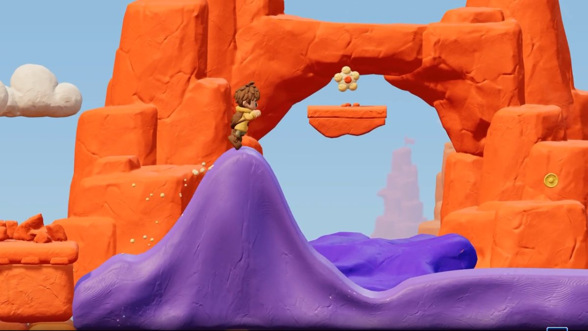
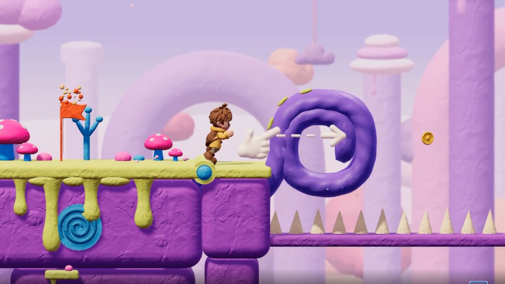
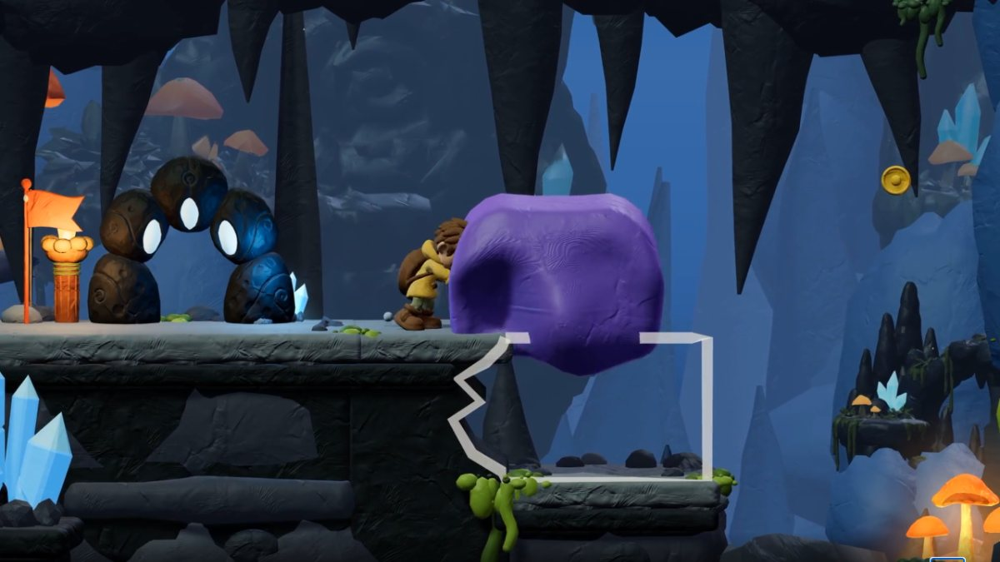
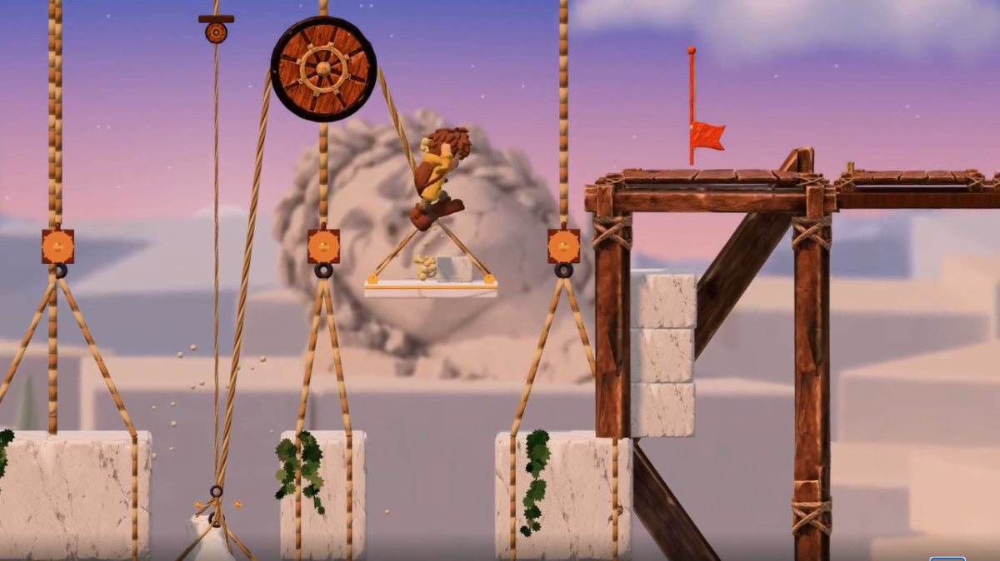
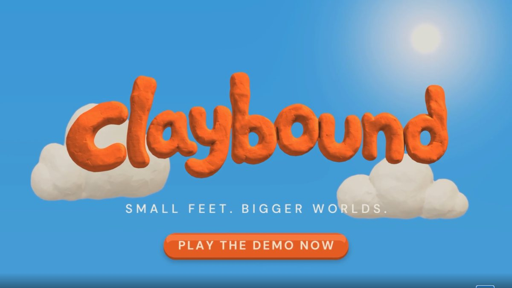
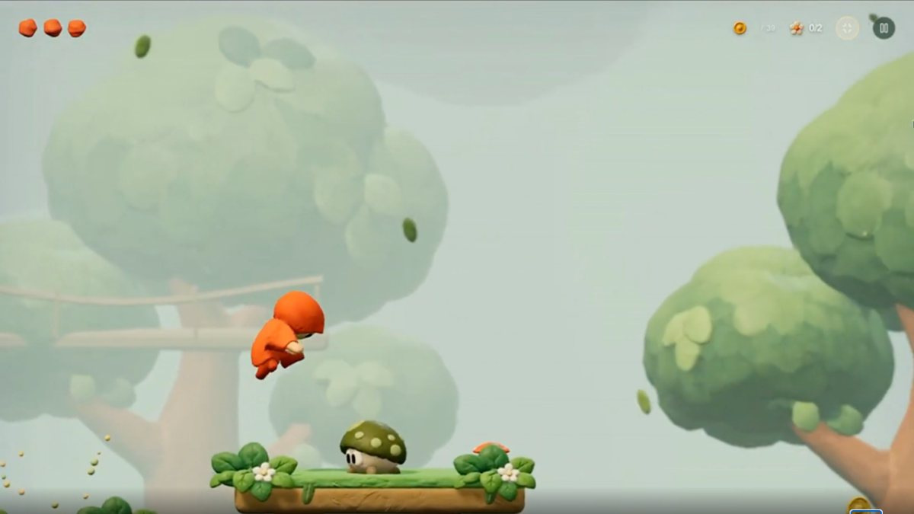
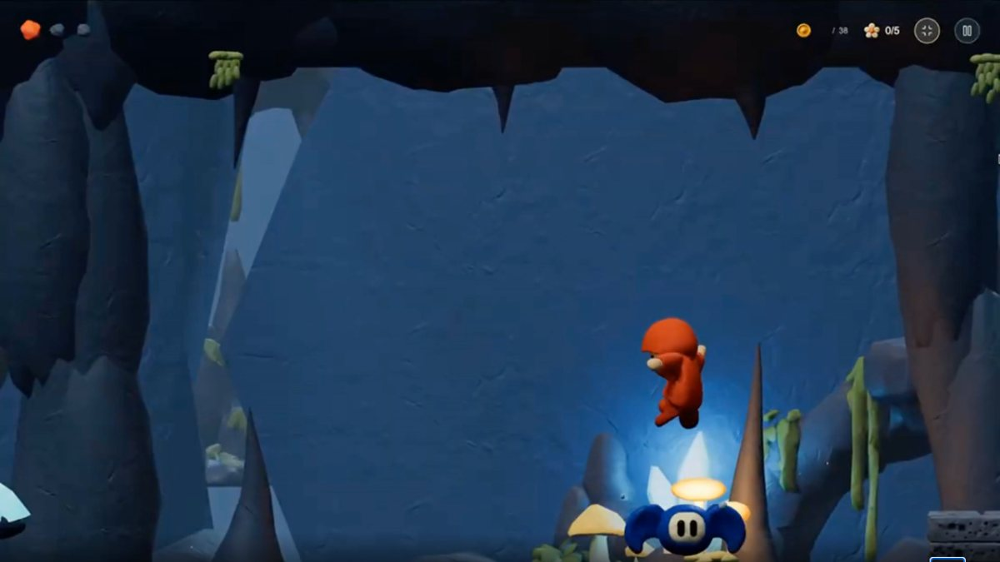
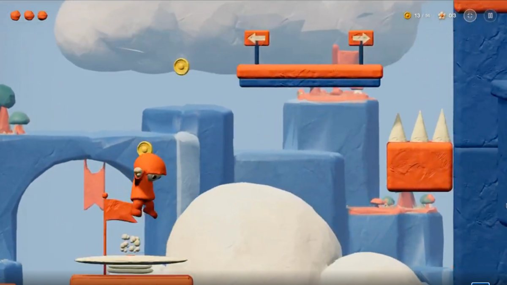
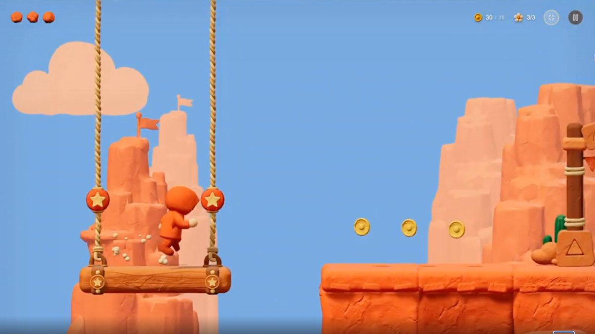
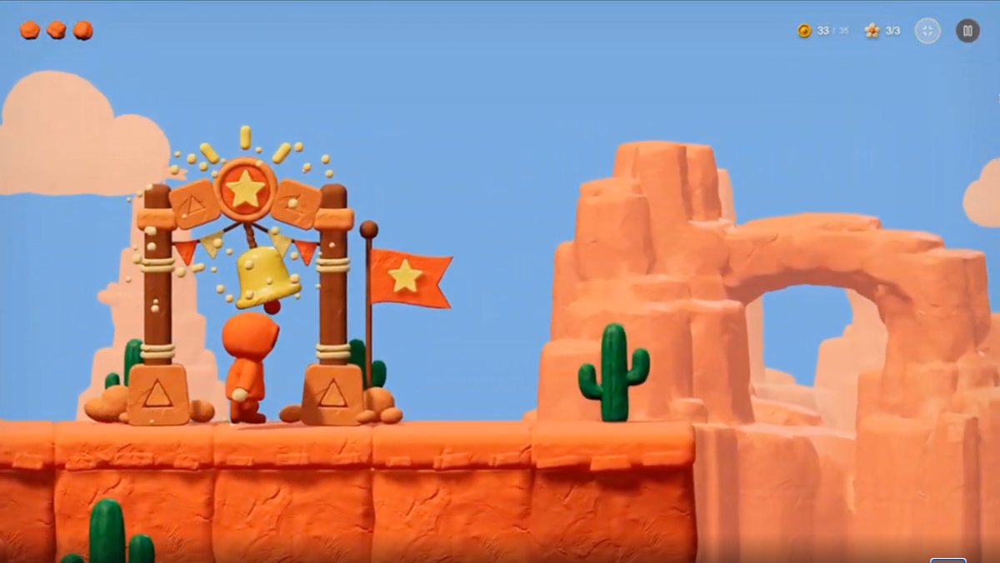
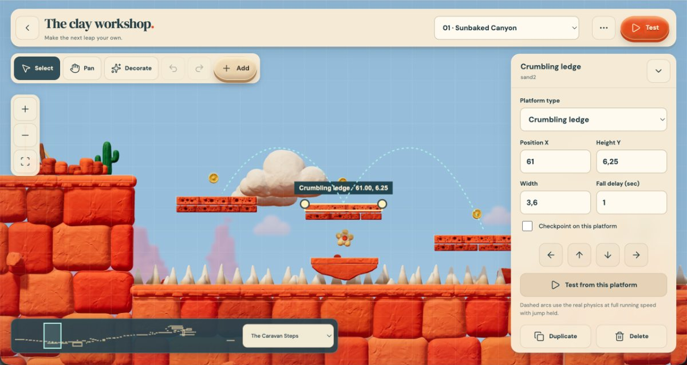
Oberfläche aus der Nähe
Ausschnitte in Originalauflösung. Hier lässt sich ablesen, welcher Teil Relief und welcher Teil Form ist.
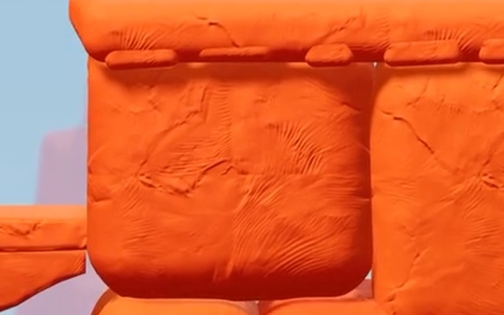
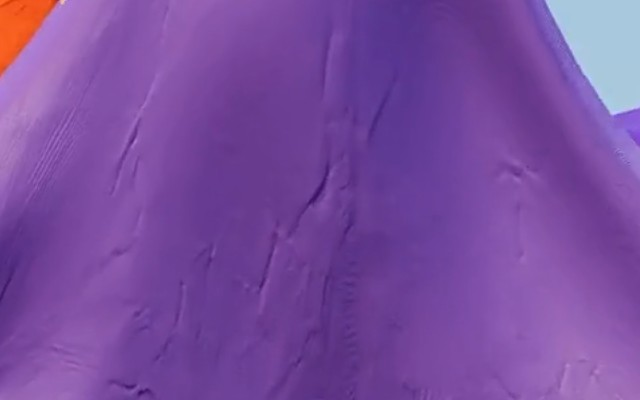
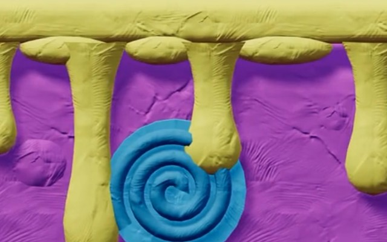
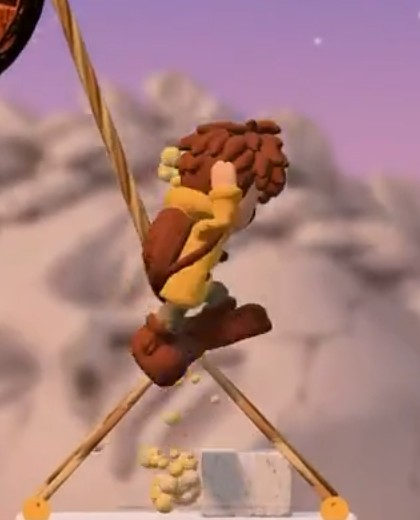
Kernfrage: Licht und Textur oder Geometrie?
Regel: Was die Lichtverteilung auf der Fläche ändert, lösen Normal-Map und Licht. Was den Umriss gegen den Hintergrund ändert, braucht Geometrie.
Gemessene Farben
Median über 24 × 24 px in der Originalauflösung. Die Werte enthalten Licht und Tonemapping und sind darum Zielfarben für das fertige Bild, keine Materialfarben. Zum Vergleich die Materialwerte aus PR #7.
Canyon-Fels · 05
Knetmasse, Schatten · 05
Knetmasse, Licht · 02
Himmel, flach · 05
Wolke · 05
Kaktus · 05
Deck, Soft Dream · 02
Blauer Block · 09
Dunst, Wildwood · 07
Höhlenwand · 03
Material knetbar · PR #7
Material Kappe · PR #7
Himmel und Dunst streuen auf der Probe um 0: flache Farbflächen ohne Textur. Die Knetflächen streuen um 2 bis 9. Gestrichelt umrandet: Materialwerte aus der Quelle, nicht gemessen.
Technik für unseren Three.js-Stack
Sechs Bausteine. A bis D bestimmen den Look, E und F die Anmutung in Bewegung. Zahlen mit »Quelle« sind Startwerte aus Claybound und werden an unseren Modellen nachgemessen, bevor sie ins Rig gehen.
Ein Adapter um MeshStandardMaterial, eingehängt per onBeforeCompile. Relief dreiachsig im Objektraum projiziert, damit es auf bewegten Teilen nicht schwimmt und keine UVs braucht. Grundfarbe bleibt vom Asset, dessen Farbrauschen wird zum Mittelwert gezogen. Rauheit 0,98 für Welt, 0,55 für knetbar (Quelle). Leichter warmer Sheen für die weiche Kante.
Offline, nicht zur Laufzeit: Vertices verschweißen, ein- bis zweimal unterteilen, Normalen glätten, tieffrequentes Rauschen mit einer Amplitude relativ zur Objektgröße auftragen, als eigene Variante speichern. Das Original bleibt, die Variante wird im Asset Librarian geführt.
Drei kachelbare Karten: Fingerfächer, Spachtelzug, Feinkorn. Schnellster Weg zu echter Anmutung: echte Knete unter seitlichem Licht fotografieren, daraus Höhen- und Normal-Map ableiten. Alternative: prozedural aus Rauschen und gestempelten Strichen.
Sonne niedrig und seitlich, damit das Relief Schatten wirft. Warmes Weiß, die Farbe bleibt im Material (Befund aus Option C). Kühler Himmels-Fill, große weiche Schattenkante, Umgebungsverdeckung für die Fugen zwischen Massen. Kein Bloom.
Hintergrund in Schichten, die zur Himmelsfarbe verblassen (07, 10). Vordergrund voll gesättigt. Optional leichte Tiefenunschärfe für den Miniatur-Eindruck.
Squash und Stretch aus dem bestehenden KFB-Deformer. Neu als Schalter: Animation »auf Zweien« (12 Schritte pro Sekunde) und Boil, also ein Relief-Versatz pro Schritt. Partikel als Knetkrümel statt Rauch.
Übertragung auf KFB
Vorschlag für die Demos
Ein KayKit-Kid, ein Kenney-Gebäude, ein Streckenstück, eine Wolke. Schalter: Relief an/aus, Geometrie-Vorstufe an/aus, Mood Tag / Golden Hour / Höhle, Stop-Motion an/aus. Beantwortet die Kernfrage im direkten Vergleich an unseren Modellen.
Startgerade aus Cologne Option C mit Knet-Material, Randwürsten und Kissengebäuden. Prüft, ob der Look bei Renntempo trägt und was er an Bildrate kostet.
Eine violette Masse, die sich per Ziehen zur Rampe formen lässt, mit Idle-Atmen und einem Collider, der aus der fertigen Form entsteht.
Entscheidungen vom 26.09.
Richtung »KlayfaBizarro«: alles ist Gummi und Knete
Georg, 26.09.: D1 gilt als erster Proof of Concept, Feinabstimmung folgt. Die Welt soll sich auch bei Kollisionen wie Gummi und Knete verhalten. Noch nicht gebaut; festgehalten sind zwei Materialverhalten, die sich im Deformer unterscheiden lassen:
Weitere Quellen und was daraus in D1 steckt
ref/clay-joebinns/; Lizenz laut Quelle frei, vor Veröffentlichung prüfen.building_A und building_E. Die schiefen Fenster und die weichen Kanten entstehen in der Geometrie-Vorstufe (unterteilen, Taubin-Glättung, Beulen). Dasselbe Verfahren lässt sich auf die Kölner OSM-Blöcke anwenden.CC0-Texturen als zweiter Weg
Gefunden, nicht geprüft. Alle drei Quellen stehen unter CC0 und liefern nahtlose PBR-Sätze mit Höhen- und Normal-Map. Was es dort unter »Clay« gibt, ist überwiegend Töpferton und Terrakotta, keine Plastilin-Handspuren. Brauchbar wären die Höhenkarten als zusätzliche Lage unter unseren Handspuren. Herunterladen kann ich die Archive nicht selbst; sie müssten ins Repo gelegt werden.